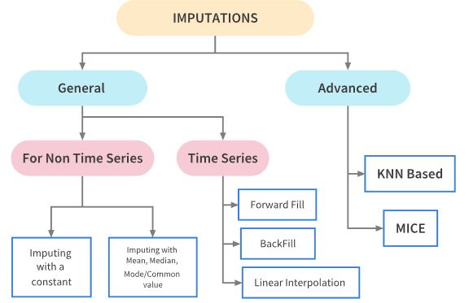

Processing¶
The processing module is a collection of tools aimed at processing data:
Date functions: functions to handle dates
File functions: functions to handle files
Object functions: functions to handle objects
Data Imputer: imputes missing values
Date functions¶
- mango.processing.date_functions.get_date_from_string(string: str) datetime¶
Convert a date string to a datetime object with time set to midnight.
Parses a string in YYYY-MM-DD format and returns a datetime object with the time component set to 00:00:00.
- Parameters:
string (str) – Date string in YYYY-MM-DD format
- Returns:
Datetime object with time set to midnight
- Return type:
datetime
- Raises:
ValueError – If the string does not match the expected format
- Example:
>>> get_date_from_string("2024-01-15") datetime.datetime(2024, 1, 15, 0, 0)
- mango.processing.date_functions.get_date_time_from_string(string: str) datetime¶
Convert a datetime string to a datetime object.
Parses a string in YYYY-MM-DDTHH:MM format and returns a datetime object with the specified date and time.
- Parameters:
string (str) – Datetime string in YYYY-MM-DDTHH:MM format
- Returns:
Datetime object with the parsed date and time
- Return type:
datetime
- Raises:
ValueError – If the string does not match the expected format
- Example:
>>> get_date_time_from_string("2024-01-15T14:30") datetime.datetime(2024, 1, 15, 14, 30)
- mango.processing.date_functions.get_date_string_from_ts(ts: datetime) str¶
Convert a datetime object to a date string.
Extracts the date portion from a datetime object and returns it as a string in YYYY-MM-DD format.
- Parameters:
ts (datetime) – Datetime object to convert
- Returns:
Date string in YYYY-MM-DD format
- Return type:
str
- Example:
>>> dt = datetime(2024, 1, 15, 14, 30) >>> get_date_string_from_ts(dt) '2024-01-15'
- mango.processing.date_functions.get_date_string_from_ts_string(string: str) str¶
Extract the date portion from a datetime string.
Extracts the first 10 characters (YYYY-MM-DD) from a datetime string in YYYY-MM-DDTHH:MM format.
- Parameters:
string (str) – Datetime string in YYYY-MM-DDTHH:MM format
- Returns:
Date string in YYYY-MM-DD format
- Return type:
str
- Example:
>>> get_date_string_from_ts_string("2024-01-15T14:30") '2024-01-15'
- mango.processing.date_functions.get_hour_from_date_time(ts: datetime) float¶
Get the hour as a decimal number from a datetime object.
Converts the hour and minute components to a decimal representation of hours (e.g., 14:30 becomes 14.5).
- Parameters:
ts (datetime) – Datetime object to extract hours from
- Returns:
Hour as a decimal number (e.g., 14.5 for 14:30)
- Return type:
float
- Raises:
AttributeError – If the object is a date instead of datetime
- Example:
>>> dt = datetime(2024, 1, 15, 14, 30) >>> get_hour_from_date_time(dt) 14.5
- mango.processing.date_functions.get_hour_from_string(string: str) float¶
Get the hour as a decimal number from a datetime string.
Parses a datetime string and converts the hour and minute components to a decimal representation of hours.
- Parameters:
string (str) – Datetime string in YYYY-MM-DDTHH:MM format
- Returns:
Hour as a decimal number
- Return type:
float
- Raises:
ValueError – If the string does not match the expected format
- Example:
>>> get_hour_from_string("2024-01-15T14:30") 14.5
- mango.processing.date_functions.date_add_weeks_days(starting_date: datetime, weeks: int = 0, days: int = 0) datetime¶
Add weeks and days to a datetime object.
Creates a new datetime object by adding the specified number of weeks and days to the starting date.
- Parameters:
starting_date (datetime) – The base datetime object
weeks (int) – Number of weeks to add (default: 0)
days (int) – Number of days to add (default: 0)
- Returns:
New datetime object with added time
- Return type:
datetime
- Raises:
TypeError – If weeks or days are not integers
- Example:
>>> dt = datetime(2024, 1, 15) >>> date_add_weeks_days(dt, weeks=2, days=3) datetime.datetime(2024, 2, 1)
- mango.processing.date_functions.date_time_add_minutes(date: datetime, minutes: float = 0) datetime¶
Add minutes to a datetime object.
Creates a new datetime object by adding the specified number of minutes to the given datetime.
- Parameters:
date (datetime) – The base datetime object
minutes (float) – Number of minutes to add (default: 0)
- Returns:
New datetime object with added minutes
- Return type:
datetime
- Raises:
TypeError – If minutes is not a numeric value
- Example:
>>> dt = datetime(2024, 1, 15, 14, 30) >>> date_time_add_minutes(dt, minutes=90.5) datetime.datetime(2024, 1, 15, 16, 0, 30)
- mango.processing.date_functions.get_time_slot_string(ts: datetime) str¶
Convert a datetime object to a time slot string.
Formats a datetime object as a string in YYYY-MM-DDTHH:MM format, suitable for time slot representations.
- Parameters:
ts (datetime) – Datetime object to format
- Returns:
Formatted datetime string
- Return type:
str
- Example:
>>> dt = datetime(2024, 1, 15, 14, 30) >>> get_time_slot_string(dt) '2024-01-15T14:30'
- mango.processing.date_functions.get_week_from_string(string: str) int¶
Get the ISO week number from a datetime string.
Parses a datetime string and returns the ISO week number of the year.
- Parameters:
string (str) – Datetime string in YYYY-MM-DDTHH:MM format
- Returns:
ISO week number (1-53)
- Return type:
int
- Raises:
ValueError – If the string does not match the expected format
- Example:
>>> get_week_from_string("2024-01-15T14:30") 3
- mango.processing.date_functions.get_week_from_ts(ts: datetime) int¶
Get the ISO week number from a datetime object.
Returns the ISO week number of the year for the given datetime.
- Parameters:
ts (datetime) – Datetime object to extract week number from
- Returns:
ISO week number (1-53)
- Return type:
int
- Example:
>>> dt = datetime(2024, 1, 15) >>> get_week_from_ts(dt) 3
- mango.processing.date_functions.to_tz(dt: datetime, tz: str = 'Europe/Madrid') datetime¶
Convert a UTC datetime to a local timezone.
Transforms a UTC datetime object to the specified timezone. The resulting datetime will have the timezone information removed (naive datetime) but will represent the local time.
- Parameters:
dt (datetime) – UTC datetime object to convert
tz (str) – Target timezone name (default: “Europe/Madrid”)
- Returns:
Datetime in local timezone (naive)
- Return type:
datetime
- Raises:
ValueError – If timezone name is invalid
- Example:
>>> utc_dt = datetime(2024, 1, 15, 12, 0) >>> to_tz(utc_dt, "Europe/Madrid") datetime.datetime(2024, 1, 15, 13, 0)
- mango.processing.date_functions.str_to_dt(string: str, fmt: str | Iterable = None) datetime¶
Convert a string to a datetime object using multiple format attempts.
Attempts to parse a string into a datetime object by trying various standard formats. Additional custom formats can be provided.
- Parameters:
string (str) – String to convert to datetime
fmt (Union[str, Iterable], optional) – Additional format(s) to try (string or list of strings)
- Returns:
Parsed datetime object
- Return type:
datetime
- Raises:
ValueError – If no format matches the string
- Example:
>>> str_to_dt("2024-01-15 14:30:00") datetime.datetime(2024, 1, 15, 14, 30) >>> str_to_dt("15/01/2024", ["%d/%m/%Y"]) datetime.datetime(2024, 1, 15)
- mango.processing.date_functions.str_to_d(string: str, fmt: str | Iterable = None) date¶
Convert a string to a date object using multiple format attempts.
Attempts to parse a string into a date object by trying various standard formats. Additional custom formats can be provided.
- Parameters:
string (str) – String to convert to date
fmt (Union[str, Iterable], optional) – Additional format(s) to try (string or list of strings)
- Returns:
Parsed date object
- Return type:
date
- Raises:
ValueError – If no format matches the string
- Example:
>>> str_to_d("2024-01-15") datetime.date(2024, 1, 15) >>> str_to_d("15/01/2024", ["%d/%m/%Y"]) datetime.date(2024, 1, 15)
- mango.processing.date_functions.dt_to_str(dt: date | datetime, fmt: str = None) str¶
Convert a date or datetime object to a string.
Formats a date or datetime object as a string using the specified format. If no format is provided, uses the default datetime format.
- Parameters:
dt (Union[date, datetime]) – Date or datetime object to convert
fmt (str, optional) – Format string for the output (default: “%Y-%m-%d %H:%M:%S”)
- Returns:
Formatted date/datetime string
- Return type:
str
- Example:
>>> dt = datetime(2024, 1, 15, 14, 30) >>> dt_to_str(dt) '2024-01-15 14:30:00' >>> dt_to_str(dt, "%Y-%m-%d") '2024-01-15'
- mango.processing.date_functions.as_datetime(x: date | datetime | str, fmt: str | Iterable = None) datetime¶
Coerce an object to a datetime object.
Converts various input types (string, date, datetime) to a datetime object. For strings, attempts multiple format parsing. For date objects, sets time to midnight.
- Parameters:
x (Union[date, datetime, str]) – Object to convert (string, date, or datetime)
fmt (Union[str, Iterable], optional) – Additional format(s) to try for string parsing
- Returns:
Datetime object
- Return type:
datetime
- Raises:
ValueError – If the object cannot be converted to datetime
- Example:
>>> as_datetime("2024-01-15") datetime.datetime(2024, 1, 15, 0, 0) >>> as_datetime(date(2024, 1, 15)) datetime.datetime(2024, 1, 15, 0, 0)
- mango.processing.date_functions.as_date(x: date | datetime | str, fmt: str | Iterable = None) date¶
Coerce an object to a date object.
Converts various input types (string, date, datetime) to a date object. For strings and datetime objects, extracts only the date portion.
- Parameters:
x (Union[date, datetime, str]) – Object to convert (string, date, or datetime)
fmt (Union[str, Iterable], optional) – Additional format(s) to try for string parsing
- Returns:
Date object
- Return type:
date
- Raises:
ValueError – If the object cannot be converted to date
- Example:
>>> as_date("2024-01-15") datetime.date(2024, 1, 15) >>> as_date(datetime(2024, 1, 15, 14, 30)) datetime.date(2024, 1, 15)
- mango.processing.date_functions.as_str(x: date | datetime | str, fmt: str = None) str¶
Coerce a date-like object to a string.
Converts date, datetime, or string objects to a formatted string. If the input is already a string and a format is specified, attempts to parse and reformat it.
- Parameters:
x (Union[date, datetime, str]) – Object to convert (date, datetime, or string)
fmt (str, optional) – Format string for the output
- Returns:
Formatted string representation
- Return type:
str
- Raises:
ValueError – If the object cannot be converted to string
- Example:
>>> as_str(datetime(2024, 1, 15, 14, 30)) '2024-01-15 14:30:00' >>> as_str("2024-01-15", "%Y-%m-%d") '2024-01-15'
- mango.processing.date_functions.add_to_str_dt(x: str, fmt_in: str | Iterable = None, fmt_out: str | Iterable = None, **kwargs)¶
Add time to a date/datetime string and return the result as a string.
Parses a date/datetime string, adds the specified time duration, and returns the result as a formatted string.
- Parameters:
x (str) – Date/datetime string to modify
fmt_in (Union[str, Iterable], optional) – Format(s) for parsing the input string
fmt_out (Union[str, Iterable], optional) – Format for the output string
kwargs – Time duration parameters for timedelta (days, hours, minutes, etc.)
- Returns:
New date/datetime as a formatted string
- Return type:
str
- Raises:
ValueError – If the input string cannot be parsed or timedelta parameters are invalid
- Example:
>>> add_to_str_dt("2024-01-01 05:00:00", hours=2) '2024-01-01 07:00:00' >>> add_to_str_dt("2024-01-01", days=7, fmt_out="%Y-%m-%d") '2024-01-08'
File functions¶
- mango.processing.file_functions.list_files_directory(directory: str, extensions: list = None)¶
List files in a directory with optional extension filtering.
Returns a list of file paths from the specified directory, optionally filtered by file extensions. If no extensions are provided, all files in the directory are returned.
- Parameters:
directory (str) – Directory path to search for files
extensions (list, optional) – List of file extensions to filter by (e.g., [‘.txt’, ‘.csv’])
- Returns:
List of file paths matching the criteria
- Return type:
list[str]
- Raises:
OSError – If the directory doesn’t exist or cannot be accessed
- Example:
>>> list_files_directory('/path/to/files', ['.txt', '.csv']) ['/path/to/files/file1.txt', '/path/to/files/data.csv'] >>> list_files_directory('/path/to/files') ['/path/to/files/file1.txt', '/path/to/files/data.csv', '/path/to/files/image.png']
- mango.processing.file_functions.check_extension(path: str, extension: str)¶
Check if a file path has the specified extension.
Performs a simple string check to determine if the file path ends with the specified extension.
- Parameters:
path (str) – File path to check
extension (str) – Extension to check for (e.g., ‘.txt’, ‘.csv’)
- Returns:
True if the file has the specified extension, False otherwise
- Return type:
bool
- Example:
>>> check_extension('/path/to/file.txt', '.txt') True >>> check_extension('/path/to/file.csv', '.txt') False
- mango.processing.file_functions.is_excel_file(path: str)¶
Check if a file is an Excel file based on its extension.
Determines if the file is an Excel file by checking if it has one of the common Excel file extensions (.xlsx, .xls, .xlsm).
- Parameters:
path (str) – File path to check
- Returns:
True if the file is an Excel file, False otherwise
- Return type:
bool
- Example:
>>> is_excel_file('/path/to/data.xlsx') True >>> is_excel_file('/path/to/data.csv') False
- mango.processing.file_functions.is_json_file(path: str)¶
Check if a file is a JSON file based on its extension.
Determines if the file is a JSON file by checking if it has the .json extension.
- Parameters:
path (str) – File path to check
- Returns:
True if the file is a JSON file, False otherwise
- Return type:
bool
- Example:
>>> is_json_file('/path/to/config.json') True >>> is_json_file('/path/to/data.csv') False
- mango.processing.file_functions.load_json(path: str, **kwargs)¶
Load a JSON file and return its contents as a Python object.
Reads a JSON file from the specified path and parses it into a Python dictionary, list, or other JSON-compatible object.
- Parameters:
path (str) – Path to the JSON file to load
kwargs – Additional keyword arguments passed to json.load()
- Returns:
Parsed JSON content (dict, list, etc.)
- Return type:
Union[dict, list, str, int, float, bool]
- Raises:
FileNotFoundError – If the file doesn’t exist
json.JSONDecodeError – If the file contains invalid JSON
- Example:
>>> data = load_json('/path/to/config.json') >>> print(data['setting']) 'value'
- mango.processing.file_functions.write_json(data: dict | list, path)¶
Write data to a JSON file with pretty formatting.
Serializes a Python object (dict, list, etc.) to JSON format and writes it to the specified file with indentation for readability.
- Parameters:
data (Union[dict, list]) – Python object to serialize (dict, list, etc.)
path (str) – Path where the JSON file should be written
- Returns:
None
- Raises:
TypeError – If the data cannot be serialized to JSON
OSError – If the file cannot be written
- Example:
>>> data = {'name': 'John', 'age': 30} >>> write_json(data, '/path/to/output.json')
- mango.processing.file_functions.load_excel_sheet(path: str, sheet: str, **kwargs)¶
Load a specific sheet from an Excel file as a pandas DataFrame.
Reads a single sheet from an Excel file and returns it as a pandas DataFrame. Requires pandas to be installed.
- Parameters:
path (str) – Path to the Excel file
sheet (str) – Name of the sheet to load
kwargs – Additional keyword arguments passed to pandas.read_excel()
- Returns:
DataFrame containing the sheet data
- Return type:
pandas.DataFrame
- Raises:
FileNotFoundError – If the file is not an Excel file
NotImplementedError – If pandas is not installed
ValueError – If the specified sheet doesn’t exist
- Example:
>>> df = load_excel_sheet('/path/to/data.xlsx', 'Sheet1') >>> print(df.head())
- mango.processing.file_functions.load_excel(path, dtype='object', output: Literal['df', 'dict', 'list', 'series', 'split', 'tight', 'records', 'index'] = 'df', sheet_name=None, **kwargs)¶
Load an Excel file with flexible output format options.
Reads an Excel file and returns the data in various formats. Can load all sheets or a specific sheet, and convert the output to different formats (DataFrame, dictionary, list of records, etc.).
- Parameters:
path (str) – Path to the Excel file
dtype (str or dict) – Data type for columns (default: “object” to preserve original data)
output (Literal["df", "dict", "list", "series", "split", "tight", "records", "index"]) – Output format (“df”, “dict”, “list”, “records”, etc.)
sheet_name (str, optional) – Name of sheet to read (None for all sheets)
kwargs – Additional arguments passed to pandas.read_excel()
- Returns:
Data in the specified output format
- Return type:
Union[pandas.DataFrame, dict, list]
- Raises:
FileNotFoundError – If the file is not an Excel file
ImportError – If pandas is not installed
- Example:
>>> # Load all sheets as DataFrames >>> data = load_excel('/path/to/data.xlsx') >>> >>> # Load specific sheet as list of records >>> data = load_excel('/path/to/data.xlsx', sheet_name='Sheet1', output='records')
- mango.processing.file_functions.write_excel(path, data)¶
Write data to an Excel file with multiple sheets.
Writes a dictionary of data (DataFrames, lists, or dicts) to an Excel file with each key becoming a separate sheet. Automatically adjusts column widths.
- Parameters:
path (str) – Path where the Excel file should be written
data (dict) – Dictionary where keys are sheet names and values are data to write
- Returns:
None
- Raises:
FileNotFoundError – If the file path is not an Excel file
ImportError – If pandas is not installed
ValueError – If data format is not supported
- Example:
>>> data = { ... 'Sheet1': pd.DataFrame({'A': [1, 2], 'B': [3, 4]}), ... 'Sheet2': [{'x': 1, 'y': 2}, {'x': 3, 'y': 4}] ... } >>> write_excel('/path/to/output.xlsx', data)
- mango.processing.file_functions.load_csv(path, **kwargs)¶
Load a CSV file as a pandas DataFrame.
Reads a CSV file and returns it as a pandas DataFrame. Falls back to the lightweight CSV loader if pandas is not available.
- Parameters:
path (str) – Path to the CSV file
kwargs – Additional keyword arguments passed to pandas.read_csv()
- Returns:
DataFrame containing the CSV data
- Return type:
pandas.DataFrame
- Raises:
FileNotFoundError – If the file is not a CSV file
ImportError – If pandas is not installed
- Example:
>>> df = load_csv('/path/to/data.csv') >>> print(df.head())
- mango.processing.file_functions.load_csv_light(path, sep=None, encoding=None)¶
Load CSV data using the standard csv library (pandas-free).
Reads a CSV file using Python’s built-in csv module and returns the data as a list of dictionaries. Automatically detects the delimiter if not specified.
- Parameters:
path (str) – Path to the CSV file
sep (str, optional) – Column separator (auto-detected if None)
encoding (str, optional) – File encoding (default: system default)
- Returns:
List of dictionaries representing CSV rows
- Return type:
list[dict]
- Raises:
ValueError – If the CSV format cannot be determined
OSError – If the file cannot be read
- Example:
>>> data = load_csv_light('/path/to/data.csv') >>> print(data[0]) # First row as dict {'column1': 'value1', 'column2': 'value2'}
- mango.processing.file_functions.get_default_dialect(sep, quoting)¶
Create a default CSV dialect with specified separator and quoting.
Creates a custom CSV dialect with the specified separator and quoting style for reading and writing CSV files.
- Parameters:
sep (str) – Column separator character
quoting (int) – Quoting style (csv.QUOTE_NONNUMERIC, csv.QUOTE_MINIMAL, etc.)
- Returns:
Configured CSV dialect
- Return type:
csv.Dialect
- Example:
>>> dialect = get_default_dialect(',', csv.QUOTE_NONNUMERIC) >>> reader = csv.DictReader(file, dialect=dialect)
- mango.processing.file_functions.write_csv(path, data, **kwargs)¶
Write data to a CSV file.
Writes data (DataFrame, list of dicts, or dict) to a CSV file. Falls back to the lightweight CSV writer if pandas is not available.
- Parameters:
path (str) – Path where the CSV file should be written
data (Union[pandas.DataFrame, list, dict]) – Data to write (DataFrame, list of dicts, or dict)
kwargs – Additional keyword arguments passed to pandas.to_csv()
- Returns:
None
- Raises:
FileNotFoundError – If the file path is not a CSV file
ImportError – If pandas is not installed
- Example:
>>> data = [{'name': 'John', 'age': 30}, {'name': 'Jane', 'age': 25}] >>> write_csv('/path/to/output.csv', data)
- mango.processing.file_functions.write_csv_light(path, data, sep=None, encoding=None)¶
Write data to CSV using the standard csv library (pandas-free).
Writes a list of dictionaries to a CSV file using Python’s built-in csv module. The first dictionary’s keys become the column headers.
- Parameters:
path (str) – Path where the CSV file should be written
data (list[dict]) – List of dictionaries to write
sep (str, optional) – Column separator (default: ‘,’)
encoding (str, optional) – File encoding (default: system default)
- Returns:
None
- Raises:
FileNotFoundError – If the file path is not a CSV file
ValueError – If data is empty or invalid
- Example:
>>> data = [{'name': 'John', 'age': 30}, {'name': 'Jane', 'age': 25}] >>> write_csv_light('/path/to/output.csv', data)
- mango.processing.file_functions.adjust_excel_col_width(writer, df, table_name: str, min_len: int = 7)¶
Adjust column widths in an Excel file for better readability.
Automatically adjusts the width of columns in an Excel worksheet based on the content length, with a minimum width constraint.
- Parameters:
writer (pandas.ExcelWriter) – Excel writer object (pandas ExcelWriter)
df (pandas.DataFrame) – DataFrame containing the data
table_name (str) – Name of the worksheet/sheet
min_len (int) – Minimum column width (default: 7)
- Returns:
None
- Example:
>>> with pd.ExcelWriter('output.xlsx') as writer: ... df.to_excel(writer, sheet_name='Sheet1') ... adjust_excel_col_width(writer, df, 'Sheet1')
- mango.processing.file_functions.load_excel_light(path, sheets=None)¶
Load an Excel file without pandas dependency.
Reads an Excel file using openpyxl and returns the data as a dictionary of TupLists (list of dictionaries). This is a lightweight alternative to the pandas-based Excel loader.
- Parameters:
path (str) – Path to the Excel file
sheets (list, optional) – List of sheet names to read (None for all sheets)
- Returns:
Dictionary where keys are sheet names and values are TupLists
- Return type:
dict[str, TupList]
- Raises:
FileNotFoundError – If the file is not an Excel file
OSError – If the file cannot be read
- Example:
>>> data = load_excel_light('/path/to/data.xlsx') >>> print(data['Sheet1'][0]) # First row of Sheet1 {'column1': 'value1', 'column2': 'value2'}
- mango.processing.file_functions.load_str_iterable(v)¶
Parse Excel cell values that represent Python iterables.
Attempts to evaluate string representations of Python iterables (lists, tuples, dicts) in Excel cells and returns them as actual Python objects. Other values are returned unchanged.
- Parameters:
v (Any) – Cell content from Excel
- Returns:
Parsed value (iterable if possible, original value otherwise)
- Return type:
Any
- Example:
>>> load_str_iterable('[1, 2, 3]') [1, 2, 3] >>> load_str_iterable('{"key": "value"}') {'key': 'value'} >>> load_str_iterable('simple string') 'simple string'
- mango.processing.file_functions.write_excel_light(path, data)¶
Write data to an Excel file without pandas dependency.
Writes a dictionary of data to an Excel file using openpyxl. Each key becomes a separate sheet, and the data is formatted as tables with automatic column width adjustment.
- Parameters:
path (str) – Path where the Excel file should be written
data (dict) – Dictionary where keys are sheet names and values are data
- Returns:
None
- Raises:
FileNotFoundError – If the file path is not an Excel file
ValueError – If data format is not supported
- Example:
>>> data = { ... 'Sheet1': [{'A': 1, 'B': 2}, {'A': 3, 'B': 4}], ... 'Sheet2': [{'X': 'a', 'Y': 'b'}] ... } >>> write_excel_light('/path/to/output.xlsx', data)
- mango.processing.file_functions.write_iterables_as_str(v)¶
Convert iterables to string representation for Excel cells.
Converts Python iterables (lists, tuples, dicts) to string representation for storage in Excel cells. Non-iterable values are returned unchanged.
- Parameters:
v (Any) – Cell content to convert
- Returns:
String representation if iterable, original value otherwise
- Return type:
Union[str, Any]
- Example:
>>> write_iterables_as_str([1, 2, 3]) '[1, 2, 3]' >>> write_iterables_as_str('simple string') 'simple string'
- mango.processing.file_functions.get_default_table_style(sheet_name, content)¶
Create a default table style for Excel worksheets.
Generates a default table style configuration for Excel worksheets with basic formatting options.
- Parameters:
sheet_name (str) – Name of the worksheet
content (list[dict]) – List of dictionaries representing the table data
- Returns:
Configured table object
- Return type:
openpyxl.worksheet.table.Table
- Example:
>>> content = [{'A': 1, 'B': 2}, {'A': 3, 'B': 4}] >>> table = get_default_table_style('Sheet1', content)
- mango.processing.file_functions.adjust_excel_col_width_2(ws, min_width=10, max_width=30)¶
Adjust column widths in an Excel worksheet with constraints.
Automatically adjusts column widths based on content length with minimum and maximum width constraints for better readability.
- Parameters:
ws (openpyxl.worksheet.worksheet.Worksheet) – Excel worksheet object
min_width (int) – Minimum column width (default: 10)
max_width (int) – Maximum column width (default: 30)
- Returns:
None
- Example:
>>> ws = wb['Sheet1'] >>> adjust_excel_col_width_2(ws, min_width=8, max_width=25)
- mango.processing.file_functions.get_column_widths(ws)¶
Calculate optimal column widths for an Excel worksheet.
Analyzes the content of each column in a worksheet and returns the optimal width for each column based on the longest content.
- Parameters:
ws (openpyxl.worksheet.worksheet.Worksheet) – Excel worksheet object
- Returns:
Dictionary mapping column letters to their optimal widths
- Return type:
dict[str, float]
- Example:
>>> ws = wb['Sheet1'] >>> widths = get_column_widths(ws) >>> print(widths) {'A': 15.0, 'B': 12.0, 'C': 20.0}
Object functions¶
- mango.processing.object_functions.pickle_copy(instance)¶
Create a deep copy of an object using pickle serialization.
Uses Python’s pickle module to serialize and deserialize the object, creating a complete deep copy. This method works with any pickleable object and preserves the exact state of the original.
- Parameters:
instance (Any) – Object to be copied
- Returns:
Deep copy of the original object
- Return type:
Any
- Raises:
pickle.PicklingError – If the object cannot be pickled
pickle.UnpicklingError – If the object cannot be unpickled
- Example:
>>> original = {"a": [1, 2, 3], "b": {"nested": True}} >>> copy = pickle_copy(original) >>> copy["a"].append(4) >>> print(original["a"]) # [1, 2, 3] - original unchanged >>> print(copy["a"]) # [1, 2, 3, 4] - copy modified
- mango.processing.object_functions.unique(lst: list)¶
Extract unique elements from a list.
Returns a list containing only the unique elements from the input list. The order of elements in the result is not guaranteed as it uses set operations internally.
- Parameters:
lst (list) – List from which to extract unique values
- Returns:
List of unique values from the input list
- Return type:
list
- Example:
>>> unique([2, 2, 3, 1, 3, 1]) [1, 2, 3] >>> unique(['a', 'b', 'a', 'c']) ['a', 'b', 'c']
- mango.processing.object_functions.reverse_dict(data)¶
Reverse the key-value pairs in a dictionary.
Creates a new dictionary where the original values become keys and the original keys become values. Note that if the original dictionary has duplicate values, only the last key for each value will be preserved.
- Parameters:
data (dict) – Dictionary to be reversed
- Returns:
Dictionary with keys and values swapped
- Return type:
dict
- Raises:
ValueError – If the dictionary has duplicate values (which would cause key conflicts)
- Example:
>>> reverse_dict({'a': 1, 'b': 2, 'c': 3}) {1: 'a', 2: 'b', 3: 'c'} >>> reverse_dict({'name': 'John', 'age': 30}) {'John': 'name', 30: 'age'}
- mango.processing.object_functions.cumsum(lst: list) list¶
Calculate the cumulative sum of a list of numbers.
Returns a list where each element is the sum of all elements up to and including that position in the original list.
- Parameters:
lst (list[Union[int, float]]) – List of numbers to calculate cumulative sum for
- Returns:
List of cumulative sums
- Return type:
list[Union[int, float]]
- Raises:
TypeError – If the list contains non-numeric values
- Example:
>>> cumsum([1, 2, 3, 4]) [1, 3, 6, 10] >>> cumsum([2, 4, 6]) [2, 6, 12]
- mango.processing.object_functions.lag_list(lst: list, lag: int = 1) list¶
Create a lagged version of a list.
Shifts the list values backward by the specified lag amount, filling the beginning with None values. This is useful for time series analysis where you need to compare current values with previous values.
- Parameters:
lst (list) – List to be lagged
lag (int) – Number of positions to lag (default: 1)
- Returns:
List with values shifted backward by lag positions
- Return type:
list
- Raises:
ValueError – If lag is negative or greater than list length
- Example:
>>> lag_list([1, 2, 3, 4], lag=1) [None, 1, 2, 3] >>> lag_list(['a', 'b', 'c'], lag=2) [None, None, 'a']
- mango.processing.object_functions.lead_list(lst: list, lead: int = 1) list¶
Create a lead version of a list.
Shifts the list values forward by the specified lead amount, filling the end with None values. This is useful for time series analysis where you need to compare current values with future values.
- Parameters:
lst (list) – List to be led
lead (int) – Number of positions to lead (default: 1)
- Returns:
List with values shifted forward by lead positions
- Return type:
list
- Raises:
ValueError – If lead is negative or greater than list length
- Example:
>>> lead_list([1, 2, 3, 4], lead=1) [2, 3, 4, None] >>> lead_list(['a', 'b', 'c'], lead=2) ['c', None, None]
- mango.processing.object_functions.row_number(lst: list, start: int = 0) list¶
Generate row numbers for list elements.
Returns a list of sequential numbers corresponding to the position of each element in the input list, starting from the specified value.
- Parameters:
lst (list) – List to generate row numbers for
start (int) – Starting number for row numbering (default: 0)
- Returns:
List of row numbers
- Return type:
list[int]
- Example:
>>> row_number(['a', 'b', 'c']) [0, 1, 2] >>> row_number(['x', 'y'], start=1) [1, 2]
- mango.processing.object_functions.flatten(lst: Iterable) list¶
Flatten a nested iterable structure into a single list.
Recursively flattens nested lists, tuples, and other iterables into a single flat list. Uses the as_list function to handle different iterable types consistently.
- Parameters:
lst (Iterable) – Nested iterable structure to flatten
- Returns:
Flattened list containing all elements
- Return type:
list
- Example:
>>> flatten([[1, 2], [3, [4, 5]]]) [1, 2, 3, 4, 5] >>> flatten([(1, 2), [3, 4]]) [1, 2, 3, 4]
- mango.processing.object_functions.df_to_list(df: pandas.DataFrame) list¶
Convert a pandas DataFrame to a list of dictionaries.
Transforms each row of the DataFrame into a dictionary where column names are keys and row values are values. This is useful for JSON serialization or when working with list-based data structures.
- Parameters:
df (pandas.DataFrame) – DataFrame to convert
- Returns:
List of dictionaries, one per row
- Return type:
list[dict]
- Raises:
ImportError – If pandas is not installed
- Example:
>>> import pandas as pd >>> df = pd.DataFrame({'A': [1, 2], 'B': [3, 4]}) >>> df_to_list(df) [{'A': 1, 'B': 3}, {'A': 2, 'B': 4}]
- mango.processing.object_functions.df_to_dict(df: pandas.DataFrame) dict¶
Convert a dictionary of DataFrames to a dictionary of record lists.
Transforms each DataFrame in the input dictionary into a list of dictionaries (records format). This is useful for JSON serialization of multiple DataFrames or when working with nested data structures.
- Parameters:
df (dict[str, pandas.DataFrame]) – Dictionary of DataFrames to convert
- Returns:
Dictionary with sheet names as keys and record lists as values
- Return type:
dict[str, list[dict]]
- Raises:
ImportError – If pandas is not installed
- Example:
>>> import pandas as pd >>> dfs = { ... 'sheet1': pd.DataFrame({'A': [1, 2]}), ... 'sheet2': pd.DataFrame({'B': [3, 4]}) ... } >>> df_to_dict(dfs) { 'sheet1': [{'A': 1}, {'A': 2}], 'sheet2': [{'B': 3}, {'B': 4}] }
- mango.processing.object_functions.as_list(x)¶
Convert an object to a list without nesting or string iteration.
Intelligently converts various object types to lists: - Scalars and strings become single-element lists - Iterables (except strings and dicts) become lists - Prevents unwanted string character iteration
- Parameters:
x (Any) – Object to convert to list
- Returns:
List representation of the input object
- Return type:
list
- Example:
>>> as_list(1) [1] >>> as_list("hello") ["hello"] >>> as_list([1, 2, 3]) [1, 2, 3] >>> as_list((1, 2, 3)) [1, 2, 3] >>> as_list({1, 2, 3}) [1, 2, 3]
- mango.processing.object_functions.first(lst)¶
Get the first element of a list safely.
Returns the first element of the list, or None if the list is empty. This prevents IndexError exceptions when working with potentially empty lists.
- Parameters:
lst (list) – List to get the first element from
- Returns:
First element of the list, or None if empty
- Return type:
Any
- Example:
>>> first([1, 2, 3]) 1 >>> first(['a', 'b', 'c']) 'a' >>> first([]) None
- mango.processing.object_functions.last(lst)¶
Get the last element of a list safely.
Returns the last element of the list, or None if the list is empty. This prevents IndexError exceptions when working with potentially empty lists.
- Parameters:
lst (list) – List to get the last element from
- Returns:
Last element of the list, or None if empty
- Return type:
Any
- Example:
>>> last([1, 2, 3]) 3 >>> last(['a', 'b', 'c']) 'c' >>> last([]) None
Data Imputer¶
Imputation refers to replacing missing data with substituted values. The DataImputer class provides several methods to impute missing values depending on the nature of the problem and data:
Statistical Imputation
Mean Imputation: Replaces missing values with the mean of the column.
imputer = DataImputer(strategy="mean") imputed_df = imputer.apply_imputation(df)
Uses
sklearn.impute.SimpleImputerMedian Imputation: Replaces missing values with the median of the column.
imputer = DataImputer(strategy="median") imputed_df = imputer.apply_imputation(df)
Uses
sklearn.impute.SimpleImputerMode Imputation: Replaces missing values with the most frequent value in the column.
imputer = DataImputer(strategy="most_frequent") imputed_df = imputer.apply_imputation(df)
Uses
sklearn.impute.SimpleImputer
Machine Learning Based Imputation
KNN Imputation: Uses K-Nearest Neighbors algorithm to impute missing values based on similarity.
imputer = DataImputer(strategy="knn", k_neighbors=5) imputed_df = imputer.apply_imputation(df)
Uses
sklearn.impute.KNNImputerRegression Imputation: Uses regression models (Ridge, Lasso, or Linear Regression) to predict missing values.
imputer = DataImputer(strategy="regression", regression_model="ridge") imputed_df = imputer.apply_imputation(df)
Uses
sklearn.linear_model(Ridge, Lasso, LinearRegression)MICE (Multiple Imputation by Chained Equations): An iterative approach where each feature with missing values is modeled as a function of other features.
imputer = DataImputer(strategy="mice") imputed_df = imputer.apply_imputation(df)
Uses
sklearn.impute.IterativeImputer(requiressklearn.experimental.enable_iterative_imputer)
Time Series Imputation
Forward Fill: Propagates the last valid observation forward.
imputer = DataImputer(strategy="forward") imputed_df = imputer.apply_imputation(df)
Backward Fill: Uses the next valid observation to fill the gap.
imputer = DataImputer(strategy="backward") imputed_df = imputer.apply_imputation(df)
Interpolation: Uses various interpolation methods (linear, polynomial, etc.) to estimate missing values.
imputer = DataImputer(strategy="interpolate", time_series_strategy="linear") imputed_df = imputer.apply_imputation(df)
Uses
pandasfor time series operations
Arbitrary Value Imputation
Constant Value: Replaces missing values with a specified arbitrary value.
imputer = DataImputer(strategy="arbitrary", arbitrary_value=0) imputed_df = imputer.apply_imputation(df)
Uses
sklearn.impute.SimpleImputer
Column-Wise Imputation
The DataImputer also supports applying different imputation strategies to different columns:
imputer = DataImputer(column_strategies={"column1": "mean", "column2": "knn"}, k_neighbors=3)
imputed_df = imputer.apply_imputation(df)
Library Dependencies
The DataImputer class relies on several libraries to implement its imputation methods:
- scikit-learn:
sklearn.impute.SimpleImputer: For mean, median, most frequent, and constant value imputationsklearn.impute.KNNImputer: For KNN-based imputationsklearn.impute.IterativeImputer: For MICE imputation (requiressklearn.experimental.enable_iterative_imputer)sklearn.linear_model: For regression-based imputation (Ridge, Lasso, LinearRegression)
pandas: For time series imputation methods (forward fill, backward fill, interpolation) and data manipulation
numpy: For array operations and data conversion
polars: For supporting polars DataFrames as input and output
- class mango.processing.data_imputer.DataImputer(strategy: str = 'mean', column_strategies: Dict[str, str] | None = None, regression_model: str | None = 'ridge', id_columns: str | None = None, **kwargs)¶
Comprehensive data imputation class supporting multiple strategies and libraries.
This class provides a unified interface for filling missing values in datasets using various imputation strategies. It supports both pandas and polars DataFrames and offers flexible configuration options for different imputation approaches.
The class supports the following imputation strategies:
Statistical imputation: mean, median, most_frequent using sklearn
KNN imputation: k-nearest neighbors based imputation
MICE imputation: Multiple Imputation by Chained Equations
Regression imputation: Ridge, Lasso, or Linear regression models
Time series imputation: forward fill, backward fill, interpolation
Arbitrary value imputation: fill with specified constant values
- Example:
>>> import pandas as pd >>> import numpy as np >>> >>> # Create sample data with missing values >>> data = pd.DataFrame({ ... 'A': [1, 2, np.nan, 4, 5], ... 'B': [np.nan, 2, 3, 4, np.nan], ... 'C': [1, np.nan, 3, 4, 5] ... }) >>> >>> # Mean imputation >>> imputer = DataImputer(strategy="mean") >>> imputed_data = imputer.apply_imputation(data) >>> >>> # Column-specific strategies >>> strategies = {'A': 'mean', 'B': 'median', 'C': 'knn'} >>> imputer = DataImputer(column_strategies=strategies) >>> imputed_data = imputer.apply_imputation(data)
- apply_imputation(data: pandas.DataFrame | polars.DataFrame)¶
Apply imputation to fill missing values in the dataset.
This is the main public method for applying imputation to a dataset. It automatically determines the appropriate imputation approach based on the configuration and applies it to the input data.
- Parameters:
data (Union[pd.DataFrame, pl.DataFrame]) – Input data containing missing values to be imputed
- Returns:
Dataset with missing values filled according to the strategy
- Return type:
Union[pd.DataFrame, pl.DataFrame]
- Raises:
ValueError – If data validation fails or imputation cannot be applied
- Example:
>>> import pandas as pd >>> import numpy as np >>> >>> # Create data with missing values >>> data = pd.DataFrame({ ... 'A': [1, 2, np.nan, 4], ... 'B': [np.nan, 2, 3, np.nan] ... }) >>> >>> # Apply mean imputation >>> imputer = DataImputer(strategy="mean") >>> result = imputer.apply_imputation(data) >>> print(result.isnull().sum())